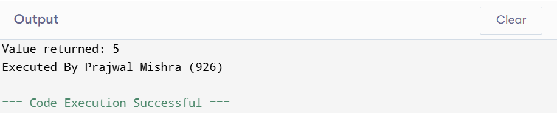
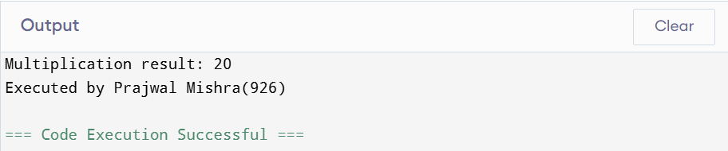
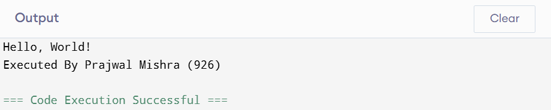
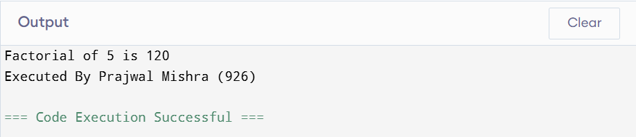
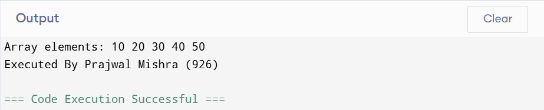
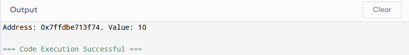
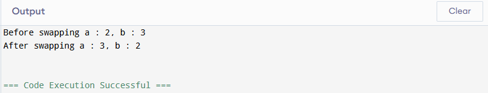
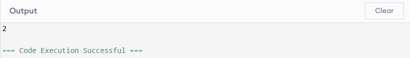

Unit 2 – C Programming
1. Working with a Function
a. Define function
A function in C programming is a block of reusable code designed to perform a particular task. Functions help to break a program into smaller, manageable, and organized pieces. Instead of writing the same code repeatedly, you can call a function whenever required. This promotes modularity, code reusability, and easy maintenance.
Example:
void greet() {
printf("Hello, welcome to C programming!\n");
}
The above function greet() prints a welcome message.
b. Syntax of functions
The basic syntax of a function in C is:
return_type function_name(parameter_list) {
// body of the function
}
return_type: Data type of value the function returns (e.g.,int,void).function_name: The name of the function, which should be descriptive.parameter_list: Inputs to the function (can be empty).
Example function returning an integer:
int square(int num) {
return num * num;
}
c. Types of functions
Functions in C can be divided into two main categories:
- Library Functions: Predefined functions provided by C's standard libraries, such as
printf(),scanf(),strlen(), etc. These functions are ready to use and save programming effort. - User Defined Functions: Functions written by the programmer to perform specific tasks that are not covered by library functions.
Example of library function: printf("Hello\n");
Example of user-defined function:
void sayHello() {
printf("Hello, User Defined Function!\n");
}
d. Components of function
- Function prototype: Declaration of the function before
main()specifying its name, return type, and parameters. It tells the compiler what to expect.
int add(int, int);
int sum = add(5, 10);
int add(int a, int b) {
return a + b;
}
void.2. Categories of Function with Examples
Functions can be classified based on whether they return a value and whether they take arguments (parameters):
i. Function with return type but no arguments
Such functions return a value but do not take any input arguments.
int getFive() {
return 5;
}
int main() {
int val = getFive();
printf("Value returned: %d\n", val);
return 0;
}

ii. Function with return type with arguments
These functions accept arguments and return a value.
int multiply(int x, int y) {
return x * y;
}
int main() {
int result = multiply(4, 5);
printf("Multiplication result: %d\n", result);
return 0;
}

iii. Function with no return type and no arguments
Functions that neither return a value nor take parameters. Used when a task does not require input or output.
void printHello() {
printf("Hello, World!\n");
}
int main() {
printHello();
return 0;
}

iv. Function with no return type but with arguments
Functions that take input parameters but do not return a value.
void printNumber(int n) {
printf("Number is: %d\n", n);
}
int main() {
printNumber(10);
return 0;
}
3. Storage Classes
Storage classes in C determine the lifetime, scope, and visibility of variables and functions in a program. The four storage classes are:
i. Automatic Storage Class
Default storage class for local variables declared inside functions or blocks. They are created when the block is entered and destroyed when it is exited.
void func() {
int a = 5; // automatic variable
printf("%d\n", a);
}
Variables declared as automatic are not preserved between function calls.
ii. External Storage Class
Variables declared outside all functions have external linkage and are accessible globally. They exist throughout the lifetime of the program.
int count = 0; // external variable
void increment() {
count++;
}
int main() {
increment();
printf("Count: %d\n", count);
return 0;
}
Output: Count: 1
iii. Register Storage Class
Suggests to the compiler to store the variable in the CPU register for faster access. It is used for frequently accessed variables. It is local to the block.
void fastFunction() {
register int counter = 0;
for(counter = 0; counter < 5; counter++) {
printf("%d\n", counter);
}
}
Note: The compiler may ignore the register request if no registers are available.
iv. Static Storage Class
Static variables preserve their value between function calls and are initialized only once. Their scope depends on where they are declared:
- If declared inside a function: scope is local, lifetime is the entire program.
- If declared outside a function: scope is global, but restricted to the file.
void counter() {
static int count = 0; // retains value between calls
count++;
printf("Count: %d\n", count);
}
int main() {
counter(); // Count: 1
counter(); // Count: 2
counter(); // Count: 3
return 0;
}
4. Recursive Function with Syntax and Example
A recursive function is a function that calls itself either directly or indirectly to solve a problem by breaking it into smaller subproblems.
Syntax:
return_type function_name(parameters) {
if (base_condition) {
return base_value;
}
return function_name(smaller_problem);
}
Example: Factorial using recursion
#include <stdio.h>
int factorial(int n) {
if (n == 0) // base condition
return 1;
else
return n * factorial(n - 1); // recursive call
}
int main() {
int num = 5;
printf("Factorial of %d is %d\n", num, factorial(num));
return 0;
}

5. Demonstration of Passing Array to a Function
Arrays can be passed to functions by specifying the array name without square brackets. Inside the function, the array is treated as a pointer to its first element.
#include <stdio.h>
void printArray(int arr[], int size) {
printf("Array elements: ");
for (int i = 0; i < size; i++) {
printf("%d ", arr[i]);
}
printf("\n");
}
int main() {
int numbers[] = {10, 20, 30, 40, 50};
printArray(numbers, 5);
return 0;
}

Note: You can also pass arrays using pointer notation like int *arr instead of int arr[].
Functions in C (Detailed)
Purpose of Functions
Functions are building blocks of structured programming in C. They allow us to divide a large program into smaller parts that are easier to understand, develop, test, and maintain. Each function performs a specific task.
Advantages of Using Functions
- Modularity: Programs can be divided into smaller logical units.
- Reusability: Once written, a function can be reused in different programs.
- Debugging Ease: Errors are easier to locate within a specific function.
- Collaboration: Large projects can be shared among multiple programmers, each working on different functions.
- Maintainability: Updating one function does not affect the rest of the code if modular design is followed.
Function Components
- Prototype: Declaration of function before
main()to inform the compiler of its type and parameters. - Definition: The block of code where the logic of the function is implemented.
- Call: The statement inside
main()or another function where the function is invoked. - Return Statement: Used to return a value from function back to the caller. If return type is
void, no value is returned.
// Function Prototype
int add(int, int);
// Function Definition
int add(int a, int b) {
return a + b; // return statement
}
// Function Call
int main() {
int sum = add(4, 5);
printf("Sum = %d", sum);
}

Passing Arguments
- Call by Value: Only a copy of the variable is passed. Changes inside the function do not affect original value.
- Call by Reference: The address of the variable is passed. Changes inside the function affect original variable.
// Call by Value Example
void modify(int x) {
x = 20; // modifies only local copy
}
// Call by Reference Example
void modify(int *x) {
*x = 20; // modifies original variable
}

Variable Scope
- Local Variable: Declared inside a block/function, accessible only within it.
- Global Variable: Declared outside all functions, accessible throughout the file.
Structures and Unions
Structure: Introduction and Syntax
A structure is a user-defined data type that groups different data types together under one name.
struct Student {
int id;
char name[30];
float marks;
};
Size of Structure
The size of a structure is not always equal to the sum of its members due to compiler padding and alignment.
Accessing Members
struct Student s1;
s1.id = 1;
strcpy(s1.name, "Anita");
s1.marks = 85.5;
printf("%s has %.2f marks", s1.name, s1.marks);
Nested Structure
struct Date {
int day, month, year;
};
struct Student {
char name[30];
struct Date dob; // nested structure
};
Array of Structures
struct Student s[3]; // array of 3 students
Passing Structure to Function
void display(struct Student st) {
printf("Name: %s, Marks: %.2f", st.name, st.marks);
}

Union: Introduction and Syntax
A union is similar to a structure but uses a single shared memory location for all members. Only one member can hold a value at a time.
union Data {
int i;
float f;
char str[20];
};
Difference between Structure and Union
- Structure: All members get separate memory; multiple members can store values simultaneously.
- Union: Members share the same memory space; only one member can be used at a time.
Pointers
Introduction
Pointers are variables that store memory addresses of other variables.
int x = 10;
int *ptr = &x;
printf("Address: %p, Value: %d", ptr, *ptr);

Declaration and Initialization
Declared with * operator. Initialized with & operator (address-of).
Pointers with Functions
void swap(int *a, int *b) {
int temp = *a;
*a = *b;
*b = temp;
}

Pointers with Arrays
int arr[3] = {1,2,3};
int *p = arr;
printf("%d", *(p+1)); // prints 2

Advantages
- Dynamic memory allocation
- Efficient array and string handling
- Supports call by reference
Disadvantages
- Complex to understand
- Risk of segmentation faults if misused
- May create memory leaks if not managed properly
File Handling
Concept
Files store data permanently on secondary storage. Unlike variables, they retain data after program termination.
Need
- Store large volumes of data permanently
- Data sharing between programs
- Backup and retrieval of data
Types of Files
- Sequential Files: Data accessed in order.
- Random Files: Data accessed directly via file pointer.
Common File Handling Functions
| Function | Purpose | Syntax |
|---|---|---|
fopen() |
Opens a file in the specified mode. | FILE *fp = fopen("file.txt", "r"); |
fclose() |
Closes an opened file. | fclose(fp); |
getc() / putc() |
Read/write a character from/to a file. | ch = getc(fp); putc('A', fp); |
fprintf() / fscanf() |
Formatted input/output with files. | fprintf(fp, "%d", num); fscanf(fp, "%d", &num); |
fgets() / fputs() |
Read/write a string from/to a file. | fgets(str, 50, fp); fputs(str, fp); |
fread() / fwrite() |
Binary input/output from a file. | fread(&var, sizeof(var), 1, fp); |
getw() / putw() |
Read/write an integer from/to a file. | x = getw(fp); putw(10, fp); |
remove() / rename() |
Delete or rename a file. | remove("file.txt"); rename("old.txt","new.txt"); |
Random Access File Functions
| Function | Purpose | Syntax |
|---|---|---|
fseek() |
Moves file pointer to a given position. | fseek(fp, offset, SEEK_SET); |
ftell() |
Returns the current position of file pointer. | long pos = ftell(fp); |
rewind() |
Moves file pointer to the beginning. | rewind(fp); |
File Opening Modes
| Mode | Description |
|---|---|
r |
Opens file for reading. File must exist. |
w |
Opens file for writing. Creates new file or truncates existing. |
a |
Opens file for appending data at end. |
r+ |
Opens file for both reading and writing. |
w+ |
Opens file for both reading and writing. Creates/truncates file. |
a+ |
Opens file for reading and appending. |
Steps to Work with Files in C
Working with files in C typically follows a clear sequence of steps: declare a file pointer, open the file in the required mode, perform read/write/append operations, and finally close the file. Below is a detailed, step-by-step explanation with code examples and best-practices. Image placeholders are included where diagrams or screenshots might help.
1. Define a File Pointer
Use the standard FILE type (defined in <stdio.h>) to declare a file pointer. Initialize it to NULL to be safe.
FILE *fp = NULL; <!-- file pointer declaration -->
2. Open the File with Required Mode
Use fopen() to open a file. Always check the return value for NULL to ensure the file opened successfully.
fp = fopen("data.txt", "r"); // open for reading
if (fp == NULL) {
perror("Error opening file");
return 1;
}
Common modes: r, w, a, r+, w+, a+ (append) and on some systems add b for binary (e.g., "rb").
3. Write Data to Files
For text files, use fprintf(), fputs(), or putc(). For binary files, use fwrite().
// Text write using fprintf
FILE *fpw = fopen("students.txt", "w");
if (fpw) {
fprintf(fpw, "%d %s %.2f\n", 1, "Anita", 85.5);
fputs("This is a text line\n", fpw);
putc('A', fpw); putc('\n', fpw);
fclose(fpw);
}
// Binary write using fwrite (example with struct)
struct Student { int id; char name[30]; float marks; };
struct Student s = {1, "Anita", 85.5};
FILE *fb = fopen("students.bin", "wb");
if (fb) {
fwrite(&s, sizeof(s), 1, fb);
fclose(fb);
}
4. Read Data from Files
For text files use fgets(), fscanf(), or getc(). For binary files use fread(). Check return values to detect success or EOF.
// Using fgets to read lines (safe for text)
char buffer[256];
FILE *fpr = fopen("students.txt", "r");
if (fpr) {
while (fgets(buffer, sizeof(buffer), fpr) != NULL) {
printf("Line: %s", buffer);
}
fclose(fpr);
}
// Using fscanf to read formatted records
int id; char name[30]; float marks;
fpr = fopen("students.txt", "r");
if (fpr) {
while (fscanf(fpr, "%d %29s %f", &id, name, &marks) == 3) {
printf("%d %s %.2f\n", id, name, marks);
}
fclose(fpr);
}
// Binary read with fread
struct Student s2;
FILE *fb = fopen("students.bin", "rb");
if (fb) {
if (fread(&s2, sizeof(s2), 1, fb) == 1) {
printf("%d %s %.2f\n", s2.id, s2.name, s2.marks);
}
fclose(fb);
}
5. Append Data to Files
Use mode "a" (or "a+") to open a file for appending. Writes always occur at end of file. If you need to both read and append, use "a+" and reposition the pointer before reading.
FILE *fpa = fopen("students.txt", "a"); // open for append
if (fpa) {
fprintf(fpa, "%d %s %.2f\n", 4, "Rohit", 72.0);
fclose(fpa);
}
6. Close the File
Use fclose() to flush buffers and release resources. Always check fclose's return (0 on success, EOF on error) if needed.
if (fclose(fp) == EOF) {
perror("Error closing file");
}
7. End of File (EOF)
EOF is an integer macro (usually -1) used by functions like getc() to indicate end-of-file. Use reading functions' return values (e.g., fgets() returns NULL, fscanf() returns number of items read) or detect EOF with feof() after a read attempt.
// Using getc() and EOF
int ch;
FILE *fpr2 = fopen("students.txt", "r");
if (fpr2) {
while ((ch = getc(fpr2)) != EOF) {
putchar(ch);
}
if (feof(fpr2)) {
printf("\nReached end of file\n");
}
fclose(fpr2);
}
// Important: feof() only becomes true after attempting to read past EOF
8. Example: Full Program (Write → Read → Append → Read)
#include <stdio.h>
#include <string.h>
int main(void) {
FILE *fp;
/* 1. Write initial data */
fp = fopen("students.txt", "w");
if (!fp) { perror("open for write"); return 1; }
fprintf(fp, "%d %s %.2f\n", 1, "Anita", 85.5);
fprintf(fp, "%d %s %.2f\n", 2, "Bimal", 78.0);
fclose(fp);
/* 2. Read and display */
fp = fopen("students.txt", "r");
if (!fp) { perror("open for read"); return 1; }
char line[128];
printf("Contents after write:\n");
while (fgets(line, sizeof(line), fp) != NULL) {
fputs(line, stdout);
}
fclose(fp);
/* 3. Append a new record */
fp = fopen("students.txt", "a");
if (!fp) { perror("open for append"); return 1; }
fprintf(fp, "%d %s %.2f\n", 3, "Chitra", 91.0);
fclose(fp);
/* 4. Read again */
fp = fopen("students.txt", "r");
if (!fp) { perror("open for read2"); return 1; }
printf("\\nContents after append:\\n");
while (fgets(line, sizeof(line), fp) != NULL) {
fputs(line, stdout);
}
fclose(fp);
return 0;
}
9. Binary Example + Simple Random Access (seek to Nth record)
/* Use this for a binary file of fixed-size records (struct Student) */
#include <stdio.h>
#include <string.h>
struct Student { int id; char name[30]; float marks; };
int main(void) {
struct Student s = {1, "Anita", 85.5}, temp;
FILE *fb = fopen("students.bin", "wb");
if (!fb) { perror("open bin"); return 1; }
fwrite(&s, sizeof(s), 1, fb);
fclose(fb);
/* Read back and seek */
fb = fopen("students.bin", "rb");
if (!fb) { perror("open bin read"); return 1; }
// Move to beginning (optional)
rewind(fb);
// Seek to record 0 (first record): offset = 0 * sizeof(struct Student)
if (fseek(fb, 0 * sizeof(struct Student), SEEK_SET) == 0) {
if (fread(&temp, sizeof(temp), 1, fb) == 1) {
printf("%d %s %.2f\n", temp.id, temp.name, temp.marks);
}
}
fclose(fb);
return 0;
}
10. Best Practices & Notes
- Always check
fopen()result before using the file pointer. - Prefer
fgets()overgets()(never usegets()- it is unsafe). - Use
fclose()to flush buffers and release resources. - Use binary modes (
rb/wb/ab) for fixed-size records and portability when storing raw structs. - Remember that
feof()should usually be checked after a read attempt, not before. - Use
fflush()if you need to force buffered output to disk beforefclose()(e.g., long-running program that must persist partial results).
Typedef Keyword
The typedef keyword creates an alias for existing data types, making code more readable.
typedef unsigned int uint; uint age = 20;